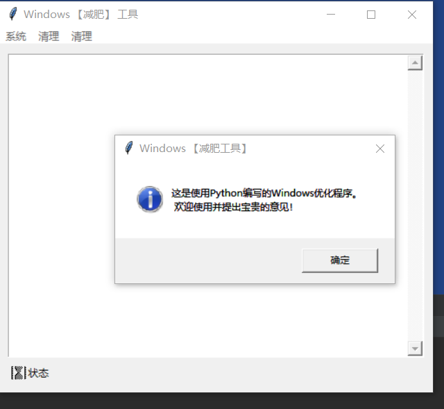

19.5.1. 第一部分GUI代码¶
#!/usr/bin/env python
# -*- coding:utf8 -*-
# auther; 18793
# Date：2019/8/9 22:45
# filename: findfat1.py
import tkinter
import tkinter.messagebox
class Window:
def __init__(self):
self.root = tkinter.Tk()
# 创建菜单
menu = tkinter.Menu(self.root)
# 创建"系统"子菜单
submenu = tkinter.Menu(menu, tearoff=0)
submenu.add_command(label='关于...', command=self.MenuAbout)
submenu.add_separator()
submenu.add_command(label='退出', command=self.MenuExit)
menu.add_cascade(label='系统', menu=submenu)
# 创建"清理"子菜单
submenu = tkinter.Menu(menu, tearoff=0)
submenu.add_command(label='扫描垃圾文件', command=self.MenuScanRubbish)
submenu.add_command(label='删除垃圾文件', command=self.MenuDelRubbish)
menu.add_cascade(label='清理', menu=submenu)
# 创建"查找"子菜单
submenu = tkinter.Menu(menu, tearoff=0)
submenu.add_command(label='搜索大文件', command=self.MenuScanBigFile)
submenu.add_separator()
submenu.add_command(label='按名称搜索文件', command=self.MenuSearchFile)
menu.add_cascade(label='清理', menu=submenu)
self.root.config(menu=menu)
# 创建标签，用于显示状态信息
self.progress = tkinter.Label(self.root, anchor=tkinter.W, text='状态', bitmap='hourglass', compound='left')
self.progress.place(x=10, y=370, width=480, height=15)
# 创建文本框,显示文件列表
self.flist = tkinter.Text(self.root)
self.flist.place(x=10, y=10, width=480, height=350)
# 为文本框添加垂直滚动条
self.vscroll = tkinter.Scrollbar(self.flist)
self.vscroll.pack(side='right', fill='y')
self.flist['yscrollcommand'] = self.vscroll.set
self.vscroll['command'] = self.flist.yview
def MainLoop(self):
self.root.title('Windows 【减肥】 工具')
self.root.minsize(500, 400)
self.root.maxsize(500, 400)
self.root.mainloop()
def MenuAbout(self):
"""
关于按钮的触发器
:return:
"""
tkinter.messagebox.showinfo("Windows 【减肥工具】",
"这是使用Python编写的Windows优化程序。\n 欢迎使用并提出宝贵的意见！")
def MenuExit(self):
"""
退出按钮的触发器
:return:
"""
self.root.quit()
def MenuScanRubbish(self):
"""
‘扫描垃圾文件’菜单
:return:
"""
result = tkinter.messagebox.askquestion("Windows【减肥工具】",
"扫描垃圾文件将需要较长时间，是否继续？")
if result == 'no':
return
tkinter.messagebox.showinfo("Findfat", "马上开始扫描垃圾文件！")
def MenuDelRubbish(self):
"""
‘删除垃圾文件’菜单
:return:
"""
result = tkinter.messagebox.askquestion("Windows【减肥工具】",
"删除垃圾文件将需要较长时间，是否继续？")
if result == 'no':
return
tkinter.messagebox.showinfo("Findfat", "马上开始删除垃圾文件！")
def MenuScanBigFile(self):
"""
‘搜索大文件’菜单
:return:
"""
result = tkinter.messagebox.askquestion("Windows【减肥工具】",
"扫描大文件将需要较长时间，是否继续？")
if result == 'no':
return
tkinter.messagebox.showinfo("Findfat", "马上开始扫描大文件！")
def MenuSearchFile(self):
"""
‘按名称搜索文件’菜单
:return:
"""
result = tkinter.messagebox.askquestion("Windows【减肥工具】",
"按名称搜索文件将需要较长时间，是否继续？")
if result == 'no':
return
tkinter.messagebox.showinfo("Findfat", "马上开始按名称搜索文件！")
if __name__ == '__main__':
window = Window()
window.MainLoop()
实现效果如下： 
遍历目录的函数¶
#!/usr/bin/env python
# -*- coding:utf8 -*-
# auther; 18793
# Date：2019/8/10 11:47
# filename: traverse1.py
import os, os.path
def traverse(pathname):
for item in os.listdir(pathname):
fullitem = os.path.join(pathname, item) # 将父目录和当前项拼接起来，获得文件全名
print(fullitem)
if os.path.isdir(fullitem):
traverse(fullitem)
traverse("D:\GitHub")